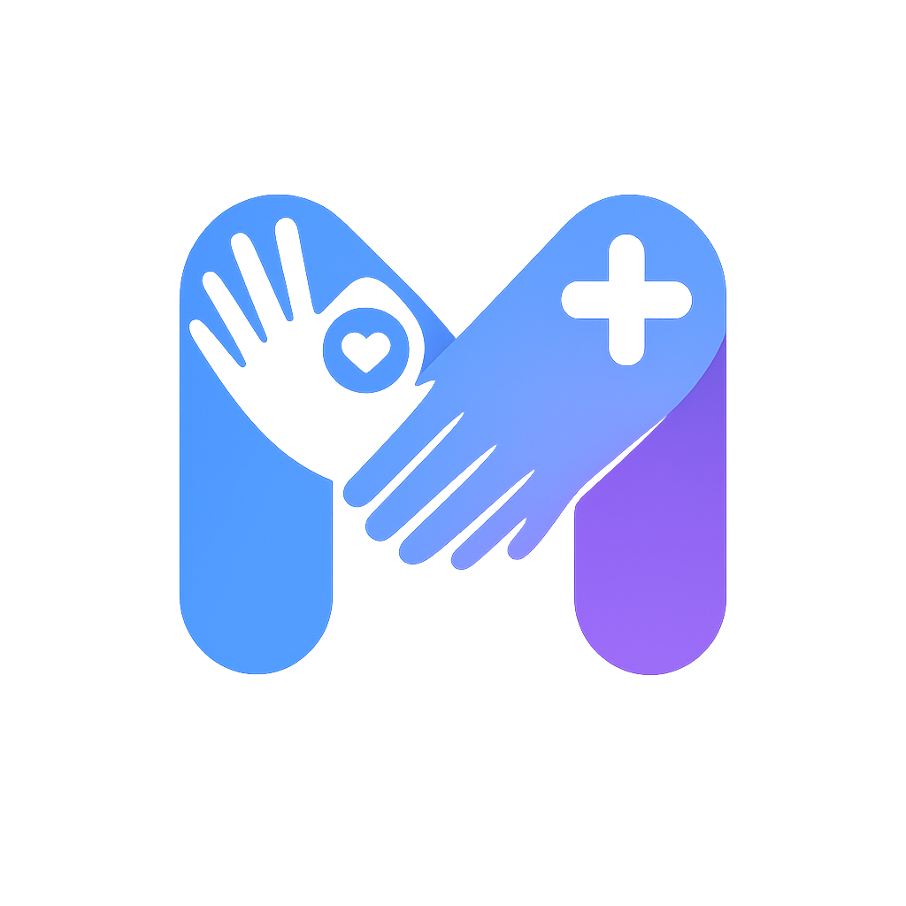
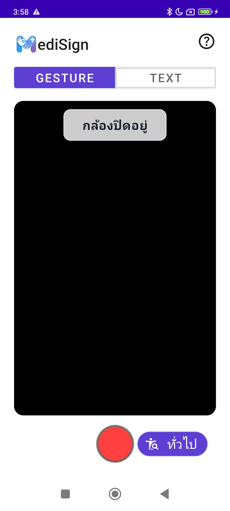

นวัตกรรมเพื่อการสื่อสาร: เปลี่ยนภาษามือเป็นข้อความและเสียง เพื่อความสะดวกในโรงพยาบาลและร้านขายยา
MediSign คือระบบผู้ช่วยแปลภาษามือที่ออกแบบมาเพื่อทลายกำแพงการสื่อสารระหว่างผู้ป่วยที่มีความบกพร่องทางการได้ยินและบุคลากรทางการแพทย์ ให้สามารถเข้าใจกันได้อย่างถูกต้องและรวดเร็ว

ภาพจำลองจะแสดงที่นี่